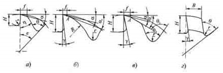

По конструкции зубьев фрезы делятся на две большие группы: с остроконечными и затылованными зубьями. Первые иногда неправильно называют фрезами с острозаточенными зубьями, в то время как фрезы с затылованными зубьями также затачивают доостра. Принципиальные же различия этих фрез заключаются в способе заточки, форме и количестве зубьев, трудоемкости изготовления, стойкости, производительности и качестве обработанной поверхности.
Процесс фрезерования характеризуется снятием тонких стружек переменной толщины. При этом у цилиндрических фрез толщина срезаемого слоя начинается с нуля. Переточка остроконечных зубьев по задней поверхности, где в основном сосредоточен износ при фрезеровании, позволяет уменьшить припуск на переточку, увеличить срок службы фрезы, уменьшить объем зубьев и главное - увеличить их число z, от которого пропорционально зависит производительность процесса фрезерования. Последняя определяется в основном минутной подачей, которая равна:
Sm = Sz · z · n ,
где Sz - подача на один зуб;
z - число зубьев;
п - число оборотов фрезы в минуту.
При увеличении числа зубьев фрезы снижается шероховатость обработанной поверхности и уменьшается неравномерность процесса резания.
Трапециевидная форма (а) наиболее простая в изготовлении, но при этом зуб несколько ослаблен, поэтому имеет небольшую высоту и малый объем стружечной канавки. По мере переточки зуба по задней грани (фаска f= 1...2мм) его высота уменьшается и он становится более прочным. Однако такая форма зубьев допускает небольшое число переточек и применяется на фрезах для чистовой обработки. При этом число зубьев из-за их малого объема может быть максимально возможным. Канавки в таких фрезах изготавливают либо фрезерованием, либо вышлифовыванием эльборовыми или алмазными кругами в цельных заготовках на станках с ЧПУ.
При переточке высота зуба уменьшается, поэтому суммарная стойкость таких фрез невелика, так как они допускают лишь 6-8 переточек. Радиус впадины зуба берется равным 0,5...2,0 мм.
Параболическая форма зуба (б) обладает наибольшей прочностью на изгиб, так как спинка зуба, оформленная по параболе, обеспечивает равнопрочность во всех сечениях по высоте зуба. Недостатком этой формы является необходимость для каждой высоты зуба иметь свою сложную фасонную канавочную фрезу. Поэтому с целью упрощения профиля спинки таких фрез параболу часто заменяют дугой окружности радиусом R = (0,3.. .0,4)d.
На передней поверхности зубьев параболической формы предусмотрен прямолинейный участок, от длины которого зависит количество переточек фрезы. Причем переточка допускается только по задней поверхности (фаска f), при этом задний угол α должен быть меньше угла α1 на 10...15° (α1 - угол между касательной к параболе в точке А). При несоблюдении этого условия в процессе переточки ширина ленточки будет сильно изменяться.
Усиленная форма зуба (в) применяется для тяжелых работ вместо параболической формы. Такой зуб имеет ломаную спинку, а также увеличенные толщину и высоту. Получают эти зубья двойным фрезерованием угловыми фрезами с углами α1 = 28...30° и α2. Хотя при этом число операций увеличивается вдвое, такие зубья проще в изготовлении, чем параболические. Они имеют больший запас на переточку и высокую прочность. При этом используются стандартные канавочные фрезы с прямолинейными режущими кромками. При переточке зубья затачиваются по задней поверхности под углом α доостра с обязательным выхаживанием во избежание биения режущих кромок. Иногда оставляют небольшие цилиндрические ленточки шириной fn = 0,02...0,03 мм, которые упрощают контроль биения зубьев фрезы.